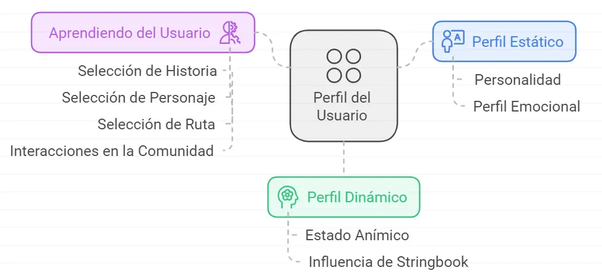

El Perfil del Usuario será una fuente esencial de información para que el Selbook, a través de la IA Anfitriona, pueda tomar las mejores decisiones en cualquier fase de la experiencia. Ya sea en la elección de la historia, del personaje, de la ruta o en las interacciones dentro de La Comunidad, cuanto mayor sea la información, mejor será el resultado.
El objetivo de la IA Anfitriona será “conocer a su huésped” mejor que él mismo. Por esta razón, el perfil deberá estar en constante retroalimentación.
Lo denominamos Perfil Estático porque definirá la Personalidad o Perfil Emocional base del usuario, pero no su Estado Anímico en cada momento. Este estado, al ser cambiante, será definido por el Perfil Dinámico, pues será cada Stringbook o historia quien vaya construyéndolo para que la IA conozca las emociones y reacciones provocadas por la lectura.

Cuando el usuario "abre” por primera vez el SelBook, deberá dedicar varios minutos a su configuración Personal, Narrativa y de Conexiones. Esta configuración inicial conformará lo que llamaremos “Perfil Estático", es decir, la base principal que quedará "semi-fijada" para todas sus lecturas y que la IA usará para tomar decisiones y ofrecer sugerencias.
Es el Perfil Social, Emocional y Psicológico que se creará, con la autorización, acción voluntaria, lecturas y respuestas que el usuario ofrecerá al Selbook, con el fin de que la IA (Sely) pueda crear un perfil de usuario base que le permita ofrecer las mejores lecturas y tomar las mejores decisiones de rutas.
🦸🏽♂️ El Perfil Dinámico: Configuración Automática Adaptativa
El Perfil Dinámico será el perfil que Sely creará de forma exclusiva para cada Historia (StringBook). Estará alimentado por el Perfil Estático y por los inputs provocados por la lectura de la historia. Esto significa que en cada historia, el perfil dinámico será diferente ya que, como es lógico, cada una creará emociones y sensaciones distintas, pero Sely aprenderá de todas las lecturas, conociendo al usuario cada vez mejor. Sely, con el paso del tiempo,
sabrá qué tipo de personajes te atráen más, qué escenas o situaciones te provocan mayor tensión, qué tramas te atrapan más…
Sí, llegará un momento en que Sely te conozca mejor que nadie.
Aunque la relación de pasajes y personajes con las emociones que provocan es una información útil para futuras lecturas (y por eso se almacena), una vez acabada una Historia, su perfil dinámico se guardará exclusivamente para ese StringBook. De esta forma, cada Historia tendrá siempre su propio Perfil Dinámico.
Fuentes de Datos para el Perfil Dinámico
Este perfil se retroalimenta constantemente de diferentes puntos de información a lo largo de toda la historia:
📥 Desde el Perfil Estático
-
Comunidad y Redes: El sistema monitoriza la actividad y conversaciones del usuario para extraer información clave: qué personajes le gustan más, qué opina de la trama, qué tipo de contenido comparte, etc.
📖 Desde la Propia Historia
- Los inputs recogidos por el BIC en las diferentes escenas, vídeos, etc.
- Los inputs de la lectura "normal" (velocidad, pausas, etc.).
- Las elecciones Conscientes, Inconscientes y Subliminales.
- Las charlas con Sely relacionadas con esa historia.
🎯 El Objetivo Clave: Anticipar y Potenciar
El objetivo de este perfil es ser capaz de anticipar las preferencias y gustos del usuario de tal forma que, al llegar a Nudos Subliminales, a pasajes multimedia o al reproducir la BSO, se puedan potenciar sus emociones y reacciones.
Esto significa, además, que Sely aprenderá constantemente del usuario, llegando a un punto en que la adaptación de las historias cada vez será mejor.
Diagrama Completo del Flujo de Datos